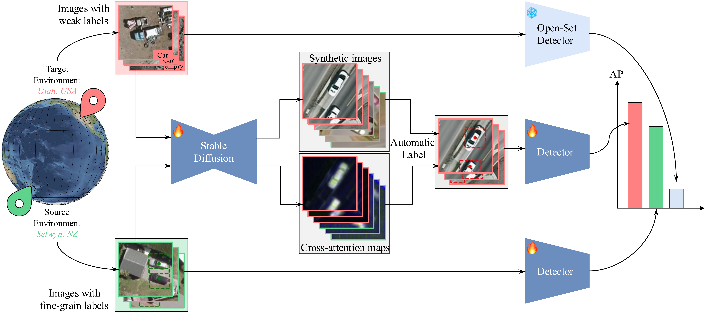
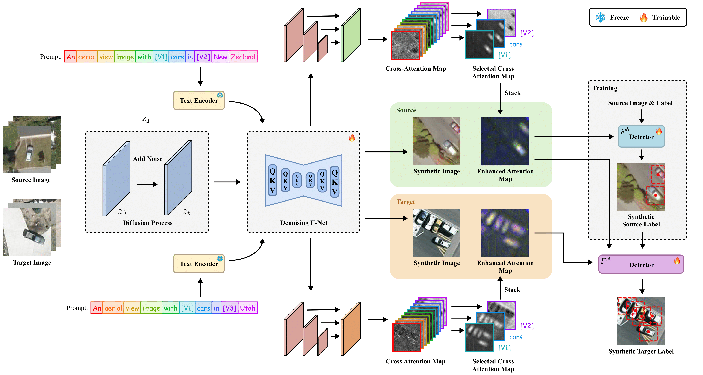
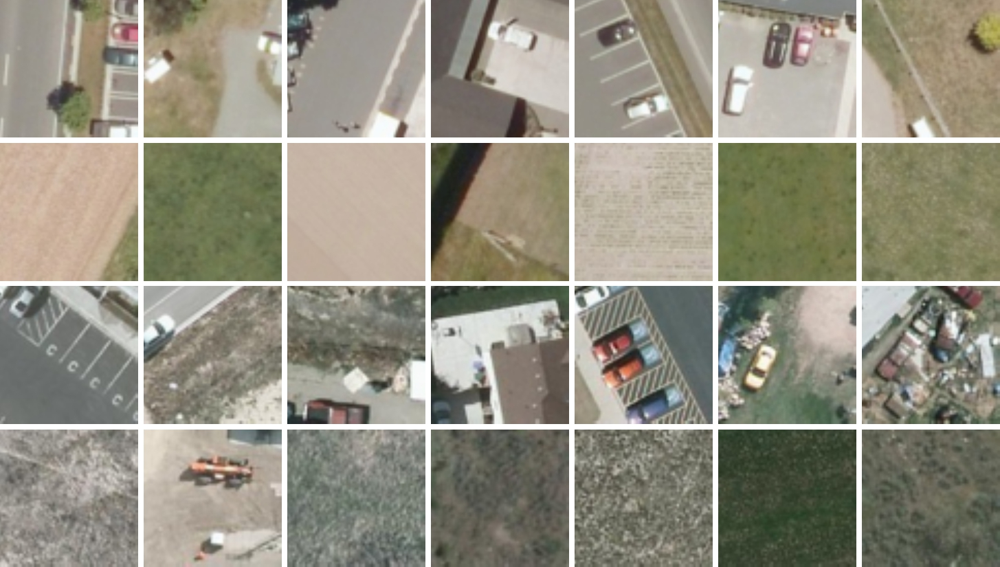

Adapting Vehicle Detectors for Aerial Imagery to Unseen Domains with Weak Supervision
, Shayok Chakraborty1,3, Fernando De la Torre1
1Carnegie Mellon University, 2Army Research Laboratory, 3Florida State University
How can we use synthetic data to improve cross-domain object detection performance in aerial imagery?
We harness the power of Stable Diffusion to generate synthetic images and automatically annotate them using cross-attention maps.
Our method outperforms supervised learning on source domain data, weakly supervised adaptation methods, unsupervised domain adaptation methods, and open-set object detectors by 4-23%, 6-10%, 7-40%, and more than 50% AP50, respectively.
We introduce two large-scale datasets captured in Utah and Selwyn to advance vehicle detection in aerial imagery.
Method Overview
We propose a pipeline that generates high-quality aerial images along with their labels to address the domain shift challenge in aerial image analysis. The first stage involves finetuning Stable Diffusion to synthesize images for both the source and target domains. The second stage then automatically generates labels for the synthetic target images by leveraging cross-attention maps. The effectiveness of this pipeline is validated by a significant boost in detector performance. This approach surpasses both baseline detectors trained on source images and open-set detectors inferred directly on the target domain. Please see our paper for more implementation details.
Experiment Results
| Method | Backbone | AP50 (%) | |
|---|---|---|---|
| LINZ→UGRC | DOTA→UGRC | ||
| Supervised Object detection (Source-only) | |||
| Faster-RCNN | Faster R-CNN | 53.1 | 52.5 |
| YOLOv5 | YOLOv5 | 63.2 | 57.6 |
| YOLOv8 | YOLOv8 | 62.9 | 71.4 |
| ViTDet | ViTDet | 55.7 | 50.4 |
| Open-set object detection | |||
| GLIP-T | Swin-T | 8.7 | 8.7 |
| OmDet-Turbo | Swin-T | 14.4 | 14.4 |
| OWL-V2 | CLIP ViT | 17.9 | 17.9 |
| Unsupervised domain adaptation object detection | |||
| SIGMA | Faster R-CNN | 36.2 | 34.8 |
| TIA | Faster R-CNN | 39.0 | 42.4 |
| Adapt. Teacher | Faster R-CNN | 29.0 | 37.0 |
| CycleGAN-Turbo | YOLOv5 | 29.1 | 60.8 |
| SSDA-YOLO | YOLOv5 | 52.3 | 49.6 |
| Cross domain weakly supervised object detection | |||
| OCUD | Faster R-CNN | 63.1 | 65.3 |
| H2FA R-CNN | Faster R-CNN | 61.8 | 68.3 |
| Ours | Faster R-CNN | 69.3 | 75.5 |
| Ours | YOLOv5 | 68.8 | 68.5 |
| Ours | YOLOv8 | 75.4 | 67.1 |
| Ours | ViTDet | 72.0 | 67.1 |
Cross-domain object detection results. LINZ to UGRC and DOTA to UGRC. We report the AP50 result.
| Method | Vision Backbone | LINZ→UGRC Precision(%) |
LINZ→UGRC Recall(%) |
|---|---|---|---|
| Vision Large Language Model | |||
| Gemini 1.5 Flash | - | 2.9 | 44.5 |
| Gemini 2.0 Flash-Lite | - | 6.6 | 26.3 |
| InternVL3-8B | InternViT | 4.7 | 22.0 |
| Qwen2.5-VL-7B | ViT | 0.4 | 4.8 |
| DeepSeek-VL2-Tiny | SigLIP-SO400M | 9.2 | 26.8 |
| LLaVA-NeXT | CLIP ViT | 5.5 | 4.7 |
| Ours | |||
| Ours | Faster R-CNN | 63.8 | 68.2 |
| Ours | YOLOv5 | 67.2 | 67.3 |
| Ours | YOLOv8 | 70.0 | 76.3 |
| Ours | ViTDet | 72.0 | 67.1 |
Table 3. Comparison between our methods and VLLMs on UGRC dataset. We report the precision and recall metrics.
Cross-attention maps for different tokens. We analyze the effectiveness of utilizing multi-channel cross-attention maps by assessing the label quality on synthetic UGRC images. (a) Synthetic UGRC images. (b) Labels generated using only the cross-attention map of the word “car”. (c) Labels generated by using multi-channel heatmaps. (d) Multi-channel cross-attention maps. (e) Cross-attention maps of the word “car”. (f) Cross-attention maps of token [V₁], designed to capture the concept of cars. (g) Cross-attention maps of token [V₃] for background, inverted for comparison. Heatmaps highlight attention intensity. In (b) and (c), dotted lines denote predicted pseudo-boxes; white dots = vehicle centers.
LINZ and UGRC Dataset
We introduce two large-scale and high-quality benchmarks, LINZ and UGRC, designed to evaluate domain adaptive object detection (DAOD) methods under realistic distribution shifts. These datasets support geographic domain shift evaluation, and provide dense, expert-level annotations. Together, these datasets comprise over 5 million annotated images and over 80,000 labeled object instances, establishing a robust foundation for testing DAOD algorithms.
| Property | LINZ (Selwyn, New Zealand) | UGRC (Utah, USA) |
|---|---|---|
| Training Images | 1,451,144 (19,564 with vehicles) |
2,142,849 (15,631 with vehicles) |
| Validation Images | 188,744 (2,108 with vehicles) |
271,252 (3,912 with vehicles) |
| Test Images | 438,189 (2,629 with vehicles) |
270,557 (1,510 with vehicles) |
| Object Instances (Train / Val / Test) |
29,495 / 2,574 / 3,640 | 26,001 / 9,878 / 12,900 |
| Resolution | 1920 × 2880 px @12.5 cm/pixel |
Up to 16,000 × 16,000 px @12.5 cm/pixel |
| Source | Land Information New Zealand (LINZ) | Utah Geospatial Resource Center (UGRC) |
BibTeX
@misc{fang2025adaptingvehicledetectorsaerial,
title={Adapting Vehicle Detectors for Aerial Imagery to Unseen Domains with Weak Supervision},
author={Xiao Fang and Minhyek Jeon and Zheyang Qin and Stanislav Panev and Celso de Melo and Shuowen Hu and Shayok Chakraborty and Fernando De la Torre},
year={2025},
eprint={2507.20976},
archivePrefix={arXiv},
primaryClass={cs.CV},
url={https://arxiv.org/abs/2507.20976},
}